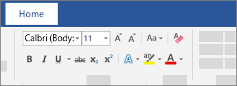

To add text, place the cursor where you want and start typing.
Select the text you want to format.
To select a single word, double-click it. To select a line of text, click to the left of it.
Select an option to change the font, font size, font color, or make the text bold, italic, or underline.
Select the text with the formatting you want to copy.
Click Format Painter , and then select the text you want to copy the formatting to.